| 日付 | 2018年1月14日（日） |
|---|---|
| 山域 | 箱根 |
| メンバー | 家族（妻、長女・6歳、長男・4歳） |
| 山行形態 | 子連れ日帰り |
| アクセス | 車 |
| ルート (Map) | しとどの窟駐車場 (8:43) - (9:02) しとどの窟 (9:10) - (9:31) しとどの窟駐車場 (9:40) - (10:01) 城山 (11:00) - (11:07) ピクニックグラウンド (11:47) - (12:05) 城山 (12:27) - (12:56) しとどの窟駐車場 |
今週末は快晴予報なので、今年の初登りに行くことにする。
息子が風邪気味なので、比較的簡単に登れる山を探してみる。
目を付けたのは湯河原の側にある城山。
容易に登れる山で展望も良さそうなため、この機会に登ってみることにする。
城山入口かしとどの窟かどちらから登るか迷ったが、しとどの窟から登ることにする。
快晴の駐車場に車を停める。標高590m。
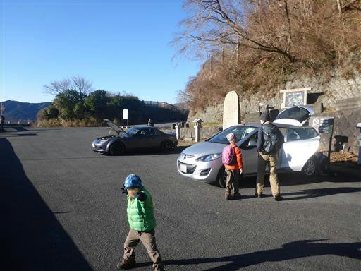
駐車場からは絶景が広がる。初島とその奥に伊豆大島がくっきりと見える。
周囲は走り屋の車やバイクが多く、次々と駐車場にやって来る。
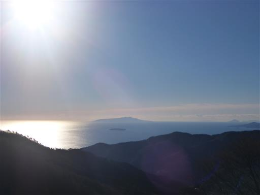
展望台兼トイレがあるが、遮るもののない駐車場からの景色で十分だ。
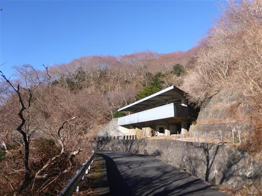
まずは近くにあるしとどの窟を見に行くことにする。
車道をしばらく歩くと城山隧道が現れる。
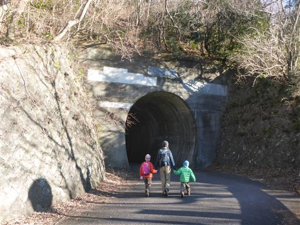
トンネルの中は少し寒く、滴り落ちた水が凍りついている。
みんなで氷を蹴って遊ぶ。
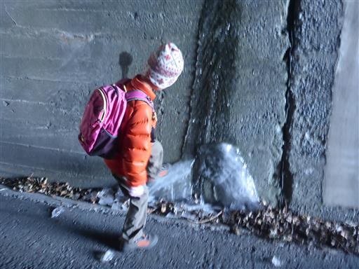
城山隧道を抜けるとしとどの窟に向かって道は下り始める。
結構な急斜面の道がしばらく続く。
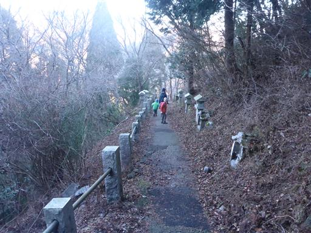
道の傍らに石像が並んでいる。
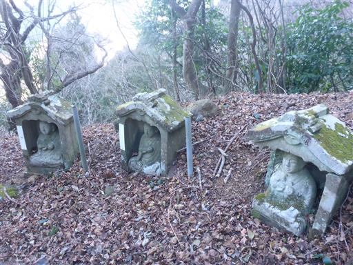
下りきったら今度は登り。城山に行くよりこちらの方がハードかもしれない。
頭上には岩から滴り落ちた水が見事なつららを造っている。
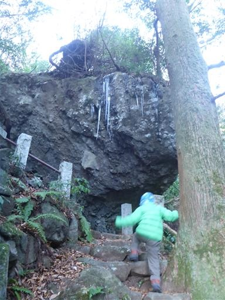
長さ1mを優に超える巨大つらら。落ちてきたら怖いのでさっと通り過ぎる。
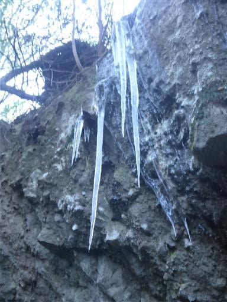
しとどの窟に到着。大きな穴に石像が並んでいる。
戦に敗れた源頼朝がここに身を隠したという言い伝えが残っている。
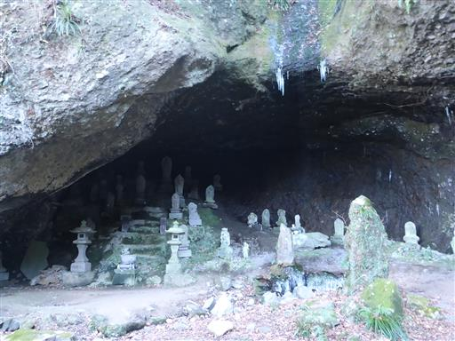
洞窟上部から滴り落ちた水が、見事な氷のオブジェを造っている。
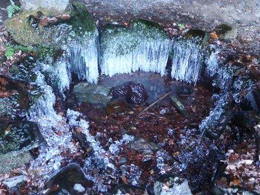
青白く輝く複雑な形をした氷で非常に美しい。
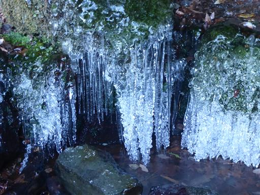
洞窟を後にして元来た道を戻る。帰りは氷を拾って遊びながら歩く。
娘曰く、これは氷の化石だそうだ。形が化石に似ているらしい。
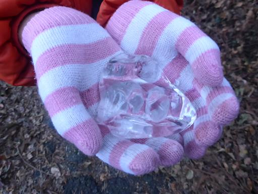
駐車場に戻ってくる。今度はここから城山を目指す。
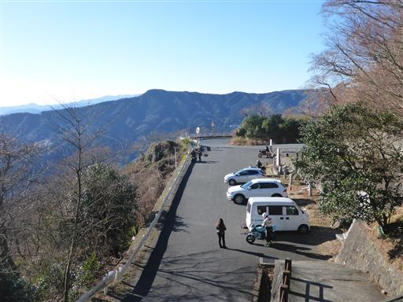
子供たちは展望台の中にある謎の空間で遊び始める。
出入口のない空間なのだが、一体何に使われていた場所なのだろう？
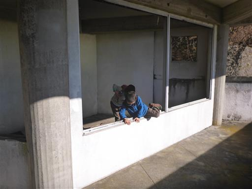
ひとしきり遊んだ後、ようやく城山に向けて歩き始める。
歩き始めはほとんど傾斜のない歩きやすい舗装路が続く。

登山道に入ると何と道は下り始める。
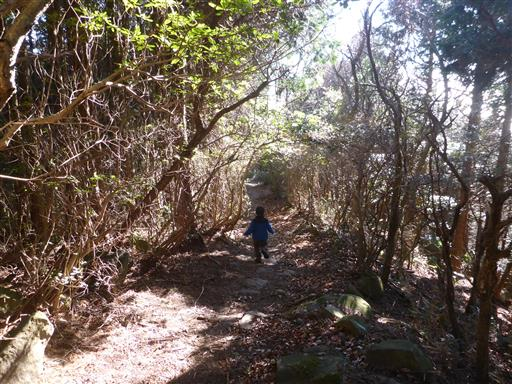
差し込む日の光が眩しい。
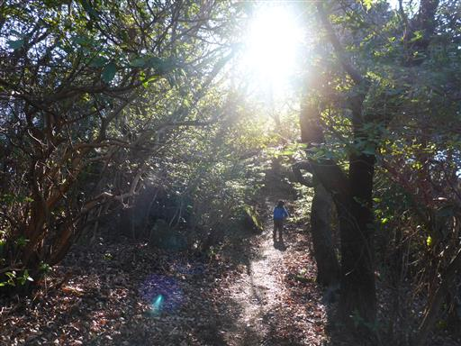
下った後、僅かの登りで城山山頂に到着する。標高563m。
登山口よりも標高の低い山頂だ…
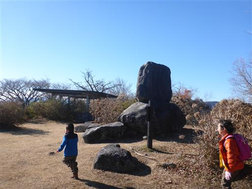
息子は早速テーブル状の石を見つけて遊び始める。
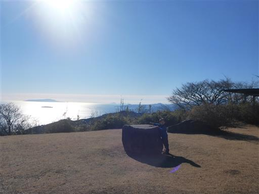
二人で石に上ってポーズ。
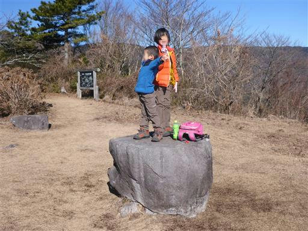
山頂からの景色は雄大で、遠く伊豆諸島の島々が見えている。
今日は本当に空気が澄んでいる。
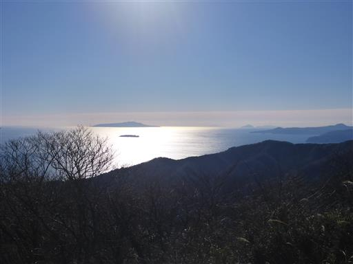
北方には真ん丸頭の幕山が見える。以前に何度か登った山だ。
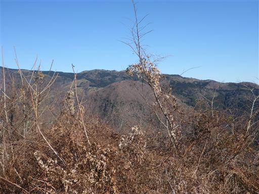
本日は時間に余裕があるので山頂でカップラーメンを作る。
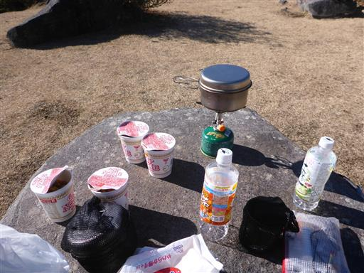
カップラーメンができるのを待つ間、子供たちは土肥城址と書かれた石碑に上って遊んでいる。
城山という山名の通り、かつてここに土肥城があったらしい。
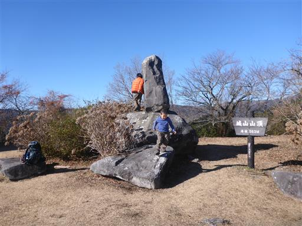
カップラーメンができたら遊びを止めて食べ始める。
寒い冬に温かいものを食べると、とてもおいしい。
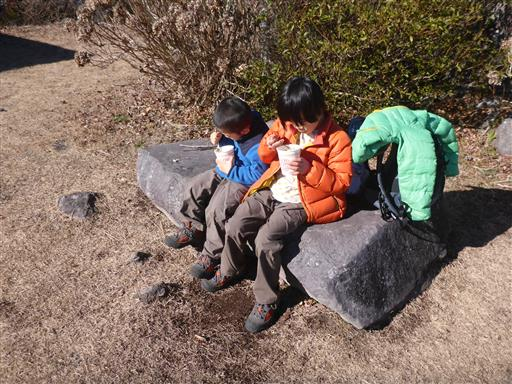
時間はまだ11時で下山するには早いため、湯河原方面に少し下ったところにある
ピクニックグラウンドという場所に行ってみることにする。
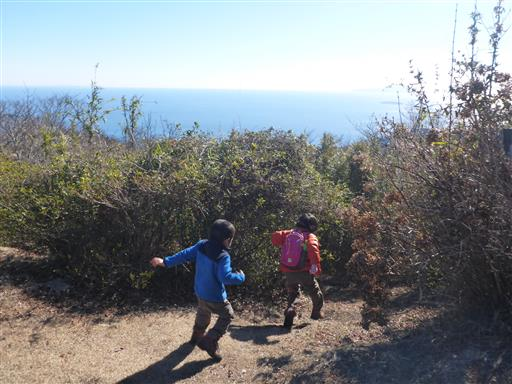
歩くこと10分でピクニックグラウンドと思われる場所に到着する。
小さな芝生が広がっている。
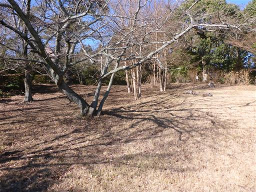
側にあまり使われることのなさそうな立派な東屋が建っている。
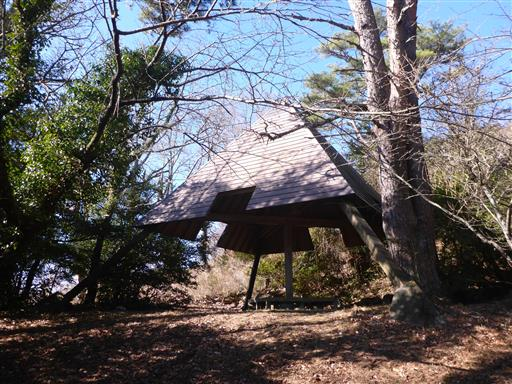
ここからの海の展望も素晴らしい。眼下に見えるのは真鶴半島。
城山山頂からより海がだいぶ近くなったように感じる。
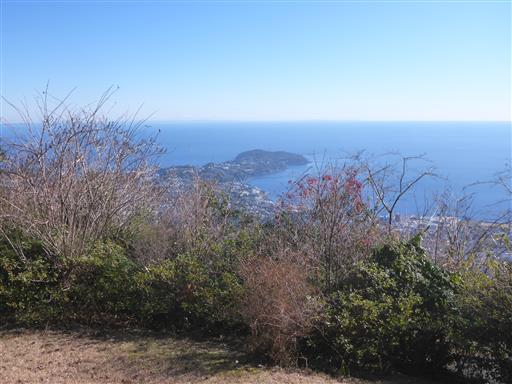
娘は松ぼっくりを集めて遊び始める。
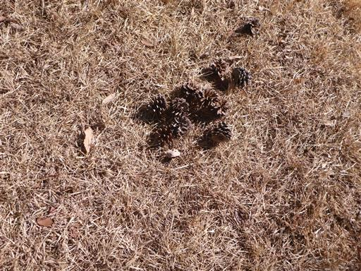
息子は拾った棒でチャンバラ。
何もない場所ではあるが、良い暇つぶしになった。
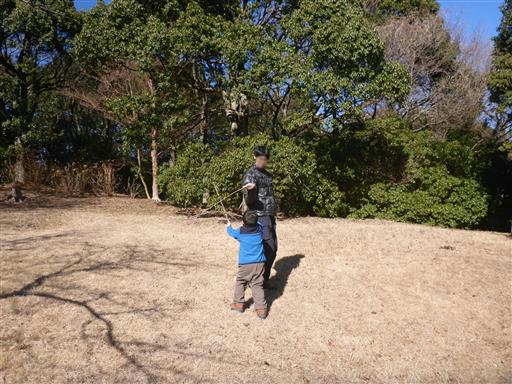
ピクニックグラウンドでおやつを食べたら城山を経由して下山する。
下山といっても登りの方が多いので、どちらかと言うとこちらが登山だ。
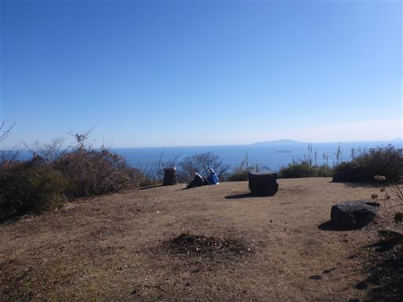
ゴールが近くなると息子の足は速くなる。
いろいろ道草を食ったが、それでもあっという間の登山だった。
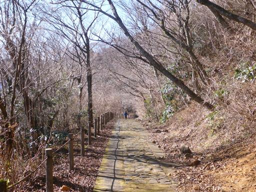
車で帰る途中に車窓から見事な富士山が見えたので、天閣台に車を停める。
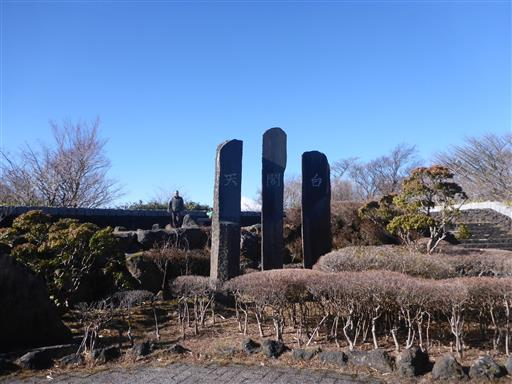
芦ノ湖の背後に見事な富士が聳え立っている。
山からは富士山が見えなかったが、ようやくここで望むことができた。
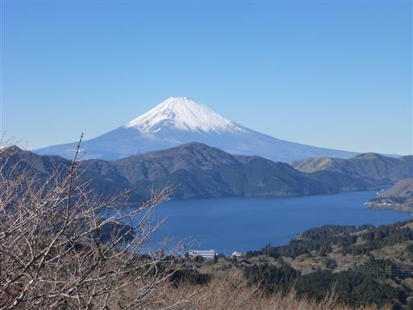
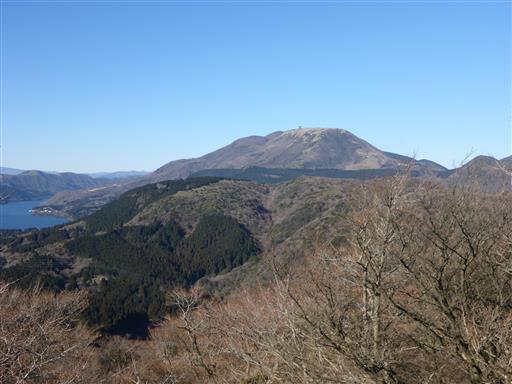
後ろを振り返ると真っ青な海まで見える。
どこを眺めても素晴らしい景色の広がる展望台だ。
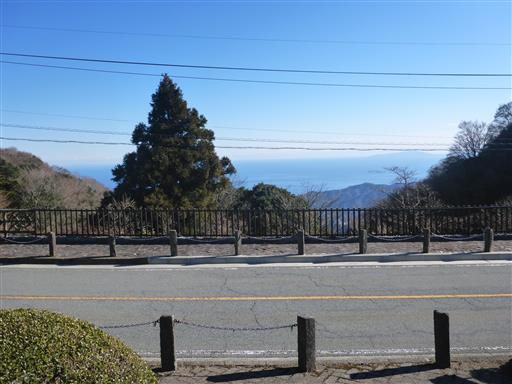
大して展望に興味のない子供たちは再び遊び始める…
本日の登山は歩く距離こそ短かったが、
美しい氷、美しい海、美しい富士を眺められ充実した一日になった。
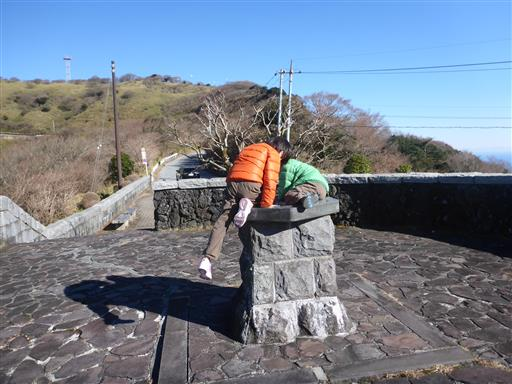